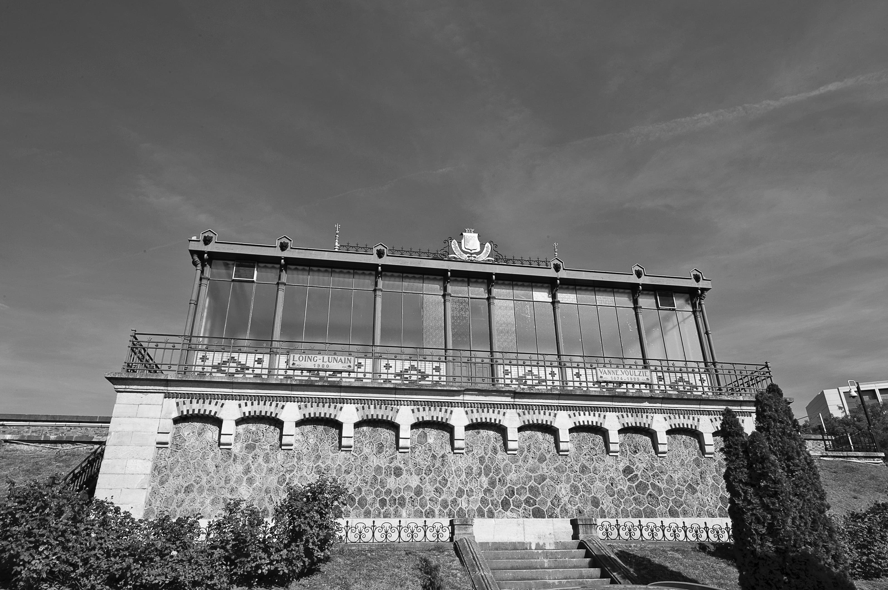
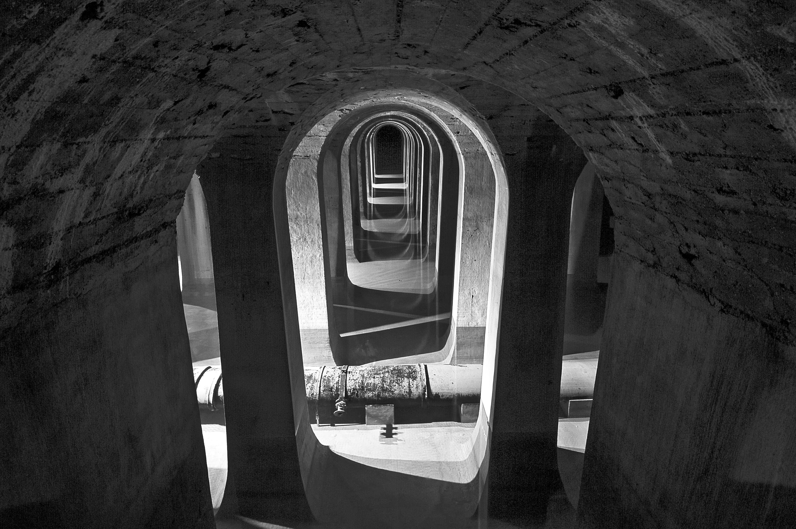
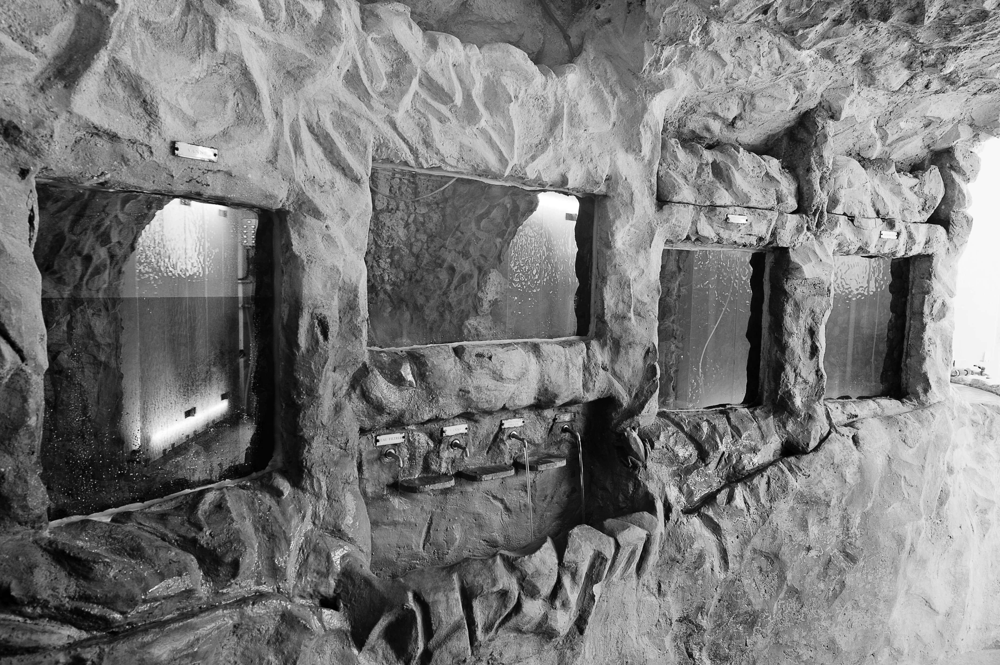
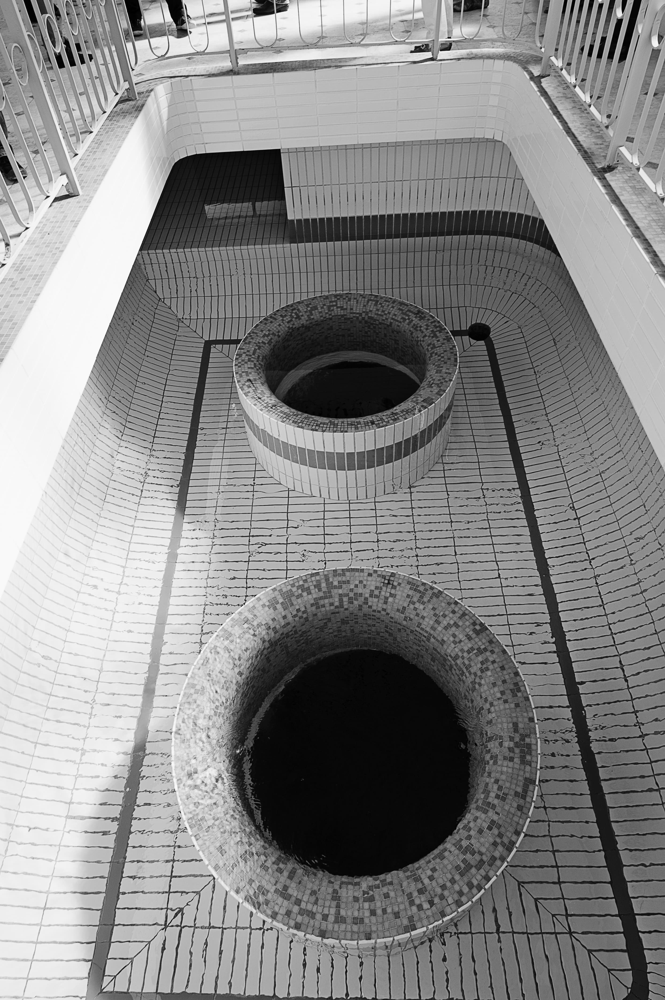

Dans l’ouvrage Paris ville invisible, Bruno Latour et Émilie Hermant mettent en lumière des réseaux et des infrastructures indispensables à la vie citadine, souvent ignoré·e·s des habitant·e·s. Servant à la gestion de l’eau, des déchets, aux déplacements ou encore au confort des rues, chacun de ces dispositifs concourt à rendre possible la vie dans des centres urbains d’une densité de population phénoménale, particulièrement à Paris.

Vue du lanternon principal. Réservoir de Montsouris. Photos : François Grunberg, Ville de Paris.
Les réservoirs d’eau font partie de ces infrastructures invisibilisées. D’une capacité de plus de 200 000 m3, le réservoir de Montsouris est resté pendant plusieurs décennies l’une des plus grandes réserves d’eau du monde. L’extérieur fait apparaître une grande verrière cintrée de métal, caractéristique des constructions de l’époque. À l’intérieur, plus de 1 800 colonnes baignent dans l’eau et dessinent d’immenses galeries symétriques. Cet ensemble majestueux, et le silence quasi religieux à l’intérieur de l’édifice, lui a valu le surnom de « cathédrale de l’eau ».

Colonnes et galeries d’un bassin intérieur. Réservoir de Montsouris. Photos : François Grunberg, Ville de Paris.
Le réservoir de Montsouris, achevé en 1874, a été construit lors des grands travaux d’Haussmann sous Napoléon III. Il est l’œuvre d’Eugène Belgrand, ingénieur des ponts et chaussées, qui a tenu un rôle majeur dans la transformation de Paris. Belgrand est aussi à l’origine d’un double réseau d’eau dans la capitale, potable et non potable, et de la mise en place des égouts modernes. L’eau du réservoir de Montsouris est toujours utilisée quotidiennement pour la consommation des Parisien·ne·s. C’est l’un des cinq principaux réservoirs de la capitale, avec ceux de Ménilmontant, de Saint-Cloud, des Lilas et de L’Haÿ-les-Roses. Chacun alimente une portion de la ville : celui de Montsouris dessert les quartiers centraux, du Ier au VIIe arrondissement.
Deux types d’eau potable sont utilisés à Paris. La moitié d’entre elles sont des eaux de source ou des eaux souterraines, captées en Bourgogne, en Île-de-France et en Normandie. L’autre moitié sont des eaux de rivière, provenant de la Seine et de la Marne. Dans les deux cas, l’eau est traitée avant sa consommation, mais selon des processus différents. Les eaux de source transitent par les usines de L’Haÿ-les-Roses, de la porte d’Arcueil et de Saint-Cloud, tandis que les usines de Joinville et d’Orly sont dédiées au traitement des eaux de rivière.
La gestion de l’eau dans le réservoir de Montsouris a une histoire surprenante. À partir du début du XIXe siècle, on se pose la question non seulement de la quantité de l’eau disponible dans Paris, mais aussi de sa qualité. Pendant de longues décennies et jusqu’à la fin du XXe siècle, elle a été vérifiée par la méthode dite « du truitomètre ». Les truites sont des poissons très sensibles aux pollutions et servaient à la tester. Si elles montraient des signes d’affaiblissement, l’eau était considérée comme impure et dirigée vers l’égout. La légende raconte que ces truites nageaient en liberté dans les milliers de mètres cubes du réservoir. En réalité, elles étaient cantonnées dans de petits aquariums aménagés dans la paroi. Pendant près de 150 ans, des générations de truites ont été l’un des principaux moyens utilisés pour vérifier la qualité de l’eau avant sa consommation. L’eau était également testée tous les jours pour son aspect, son goût et son odeur – son évaluation ne reposait pas sur des critères chiffrés. Le truitomètre a fonctionné jusqu’en 1996. Désormais, conformément aux réglementations européennes, le passage par l’usine d’assainissement qui avoisine le réservoir de L’Haÿ-les-Roses est obligatoire. Quant au contrôle de l’eau, il repose sur une évaluation technique qui comprend soixante-deux critères de potabilité, et son assainissement est effectué de plus en plus en amont. Depuis 2010, le service de l’eau a été remunicipaliséLa gestion était auparavant assurée par des entreprises privées et ce, depuis la concession d’eau accordée sous Napoléon III à la Compagnie générale des eaux. dans la capitale et son unique gestionnaire, l’agence Eau de Paris, doit disposer de zones de captage de plus en plus éloignées de la ville.

Aquariums à truites ou truitomètre. Réservoir de Montsouris. Photos : François Grunberg, Ville de Paris.
L’exemple du truitomètre n’est pas un cas isolé de recours à des animaux ou à des organismes vivants comme sentinelles de la qualité environnementale. Christelle Gramaglia et Delaine Sampaio da SilvaChristelle Gramaglia et Delaine Sampaio da Silva, « Des mollusques pour “faire parler” les rivières ? », dans Sophie Houdart (dir.), Humains, non-humains. Comment repeupler les sciences sociales, Paris, La Découverte, 2011, p. 221-233. ont notamment documenté l’utilisation de mollusques pour témoigner de la qualité de l’eau ou de lichens pour tester la pollution de l’air. On peut voir dans le dispositif du réservoir de Montsouris un bricolage étonnant et accueillir favorablement l’évolution des pratiques réglementaires qui mobilisent des dispositifs de quantification du risque. Faut-il pour autant se passer d’indicateurs vivants ? À l’heure où la biodiversité est fortement menacée, les espèces sentinelles témoignent des effets conjugués des activités humaines sur les écosystèmes.

Canalisations verticales ou « tulipes ». Réservoir de Montsouris. Photos : François Grunberg, Ville de Paris.
Pamela Schwartz
Pamela Schwartz est normalienne et conduit des projets d’urbanisme à la Ville de Paris.
Bibliographie
BOCQUET Denis, CHATZIS Konstantinos et SANDER Agnès, « L’universalisation de la distribution de l’eau de Paris, 1830-1930 », Flux, 76-77 (2), 2009, p. 137-141.
EAU DE PARIS, À la découverte du réservoir de Montsouris, 2014.
GRABER Frédéric, « La qualité de l’eau à Paris, 1760-1820 », Entreprises et histoire, 50 (1), 2008, p. 119-133.
GRAMAGLIA Christelle et SAMPAIO DA SILVA Delaine, « Des mollusques pour “faire parler” les rivières ? », dans Sophie Houdart (dir.), Humains, non-humains. Comment repeupler les sciences sociales, Paris, La Découverte, 2011, p. 221-233.
HAWLEY John B., « The Municipal Water Supply of Paris », Journal (American Water Works Association), 27 (8), 1935, p. 983-985.
LATOUR Bruno et HERMANT Émilie, Paris ville invisible, Paris, La Découverte, 1998.